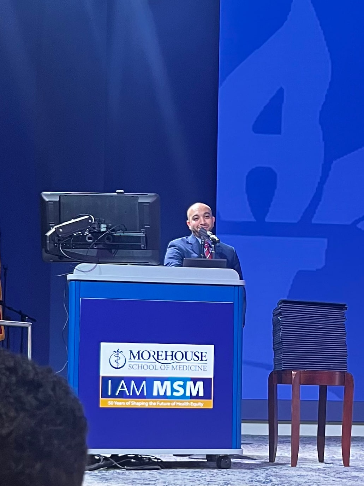
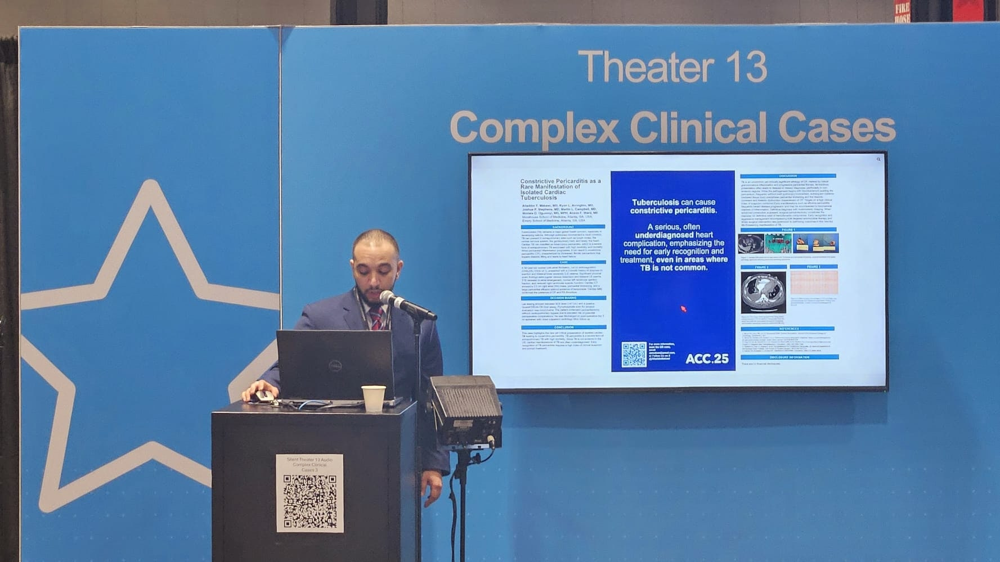

Resident research education
Clearer pathways from a clinical question to a feasible project, abstract, and manuscript.
Leadership · teaching · service
Resident leadership, medical education, and professional speaking by Alladdin Yousif Makawi, MD.

Resident leadership · 2024–2025
As President of the Morehouse Resident and Fellow Association during the 2024–2025 academic year, Alladdin Yousif Makawi, MD was invited to deliver a commencement speech at the Morehouse GME graduation for residents and fellows in the Class of 2025.
The role centered on representing trainee perspectives, supporting communication across programs, and recognizing the shared work behind each graduate’s milestone.

Clinical teaching · 2025
Case-based teaching is most useful when it makes the reasoning visible: defining the problem, organizing the differential diagnosis, interpreting the evidence, and identifying the decision points that transfer to future patients.
This presentation is part of a broader interest in concise resident education, cardiovascular case scholarship, and practical research mentorship.
Current priorities
In the Research Chief Resident role, the aim is to make scholarly work more navigable without lowering its standards.
Clearer pathways from a clinical question to a feasible project, abstract, and manuscript.
Early feedback, shared templates, and connections to the right methodological support.
Educational formats that respect clinical constraints while preserving rigor and accountability.